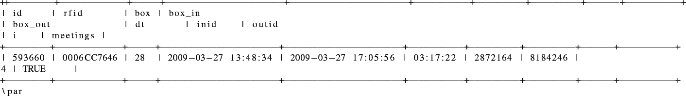

« dir table | Contents | Meetings table »
res table
When two direction result, one with a |dir| value of |in| and the other with a |dir| value of |out|, as well as matching |rfid| and |box| values are found, they form a so called stay result (see section ![[*]](file:/opt/local/share/lib/latex2html/icons/crossref.png) on page for details).
on page for details).
Shown next is a row of the |res| table followed by short explanation of the columns.

- The columns |id|, |rfid| and |box| were already explained for the previous tables, and have the same function in this table.
- The |box_in| and |box_out| values denote the beginning and the end time of the sojourn of the |rfid| in a |box|.
- The |inid| and |outid| values can be used to backtrack the datasets in the |dir| or |data| table making up the stay result. This is explained in detail in section on page .
- The |i| value is either |3| or |4| and indicate the type of the result. This distinction is explained in detail in section on page .
- The boolean value |meetings| is set to |true| when the result set has been analyzed for meetings.


Next: Meetings table
Up: Processed data
Previous: dir table
Contents
rleuthold@access.ch